Expand all Collapse all Chatterfang turns every token into two. Whenever you make Treasures, Food, Faeries, Saprolings or Orcs, you also get that many 1/1 Squirrels. Then sacrifice outlets turn the Squirrels into mana and cards, and drain payoffs make every death cost the table life. Go wide, sacrifice everything, and finish with one of three-card loops or a Craterhoof. The commander Chatterfang, Squirrel Generalthree mana, forestwalk. If one or more tokens would be created under your control, you get those tokens plus that many 1/1 green Squirrels. {B}, sacrifice X Squirrels: target creature gets +X/-X until end of turn. His ability is removal (point -X toughness at their creature) or a finisher (point +X power at an unblocked creature). It is also a free sacrifice outlet for every drain card in the deck. Token doublers stack with him: Doubling Season or Parallel Lives first doubles the tokens, then Chatterfang adds a Squirrel for each. Infinite combos — three cards each ++Chatterfang, Squirrel General + Warren Soultrader + Zulaport Cutthroatpay 1 life and sacrifice a Squirrel to Soultrader for a Treasure; Chatterfang adds a Squirrel with it. Sacrifice that Squirrel, and repeat. Each loop drains every opponent 1 and gains you the 1 back. Blood Artist, Bastion of Remembrance or Nadier's Nightblade work in place of the Cutthroat. ++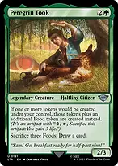Chatterfang, Squirrel General + Warren Soultrader + Peregrin Tookthe same loop with no drain card: every Treasure also brings a Food and a Squirrel. Unlimited Treasure, Food and Squirrels; add Mirkwood Bats or any drain to finish. ++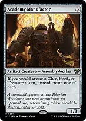Chatterfang, Squirrel General + Warren Soultrader + Academy Manufactorthe same: each Treasure becomes a Clue, Food and Treasure, each with a Squirrel. 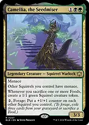++Camellia, the Seedmiser + Peregrin Took + Ashnod's Altarsacrifice a Squirrel to the Altar for {C}{C}, spend it on Camellia's forage by sacrificing a Food. Camellia makes a Squirrel, Took adds a Food. Unlimited Squirrels and +1/+1 counters on every other Squirrel. Drain payoffs Zulaport Cutthroateach opponent loses 1 whenever one of your creatures dies. Blood Artistany creature dying drains a player 1. Bastion of Remembrancea Cutthroat on an enchantment. 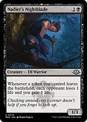Nadier's Nightbladeeach opponent loses 1 whenever a TOKEN of yours leaves the battlefield. Treasures and Food count. 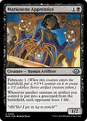Marionette Apprenticecreatures AND artifacts you lose drain 1. Treasures and Food count. Mirkwood Batseach opponent loses 1 whenever you create OR sacrifice a token. 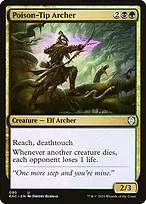Poison-Tip Archerany creature dying drains each opponent 1, and it has deathtouch. 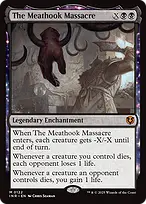The Meathook Massacrea sweeper that sizes itself, then drains on every one of your creatures dying. Grave Pactevery creature of yours that dies makes each opponent sacrifice one. With Squirrels to spare, their boards are gone. Token makers Bitterblossoma flying Faerie every upkeep, plus a Squirrel. 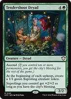Tendershoot Dryada Saproling every upkeep — EVERY player's upkeep — plus a Squirrel each time. 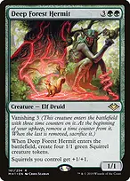Deep Forest Hermitfour Squirrels on entering (eight with Chatterfang), and a Squirrel lord. 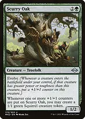Scurry Oaka Squirrel whenever it gets counters. 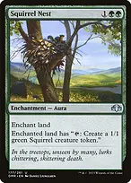Squirrel Nesta land that taps for a Squirrel, so two. 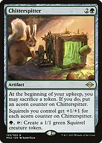Chitterspitter{G}, {T} for a Squirrel; sacrifice a token each upkeep to grow every Squirrel by 1. Tireless ProvisionerFood or Treasure on every land drop, plus a Squirrel. 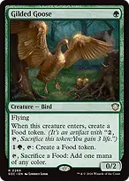Gilded GooseFood, and turns Food into mana. Peregrin Tookevery token creation adds a Food; sacrifice three Food to draw. Academy Manufactorevery Treasure, Food or Clue becomes one of each. 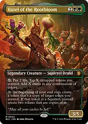Hazel of the Rootbloomtaps your tokens for mana, and copies a token every end step (two copies if it's a Squirrel). 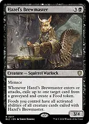Hazel's BrewmasterFood on entering and attacking; Food gains the activated abilities of creatures it exiles. Camellia, the Seedmiserevery Food you sacrifice makes a Squirrel, and Squirrels gain menace. 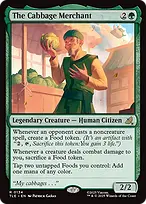The Cabbage MerchantFood whenever an opponent casts a noncreature spell; tap two Food for mana. 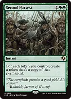Second Harvestcopies every token you control, and Chatterfang adds a Squirrel for each copy. 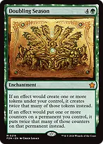Doubling Seasondoubles tokens and counters. 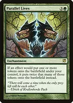Parallel Livesdoubles tokens. 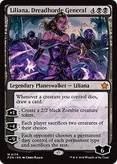Liliana, Dreadhorde Generala Zombie each turn, and a card whenever a creature of yours dies. Orcish Bowmastersan Orc army token and a ping, plus a Squirrel. Sacrifice outlets Ashnod's Altara creature for {C}{C}. Phyrexian Altara creature for one mana of any colour. Warren Soultraderpay 1 life and sacrifice a creature for a Treasure (and a Squirrel). Phyrexian Towera land that sacrifices for {B}{B}. 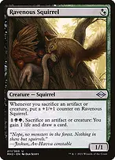Ravenous Squirrelgrows whenever you sacrifice; {1}{B}{G} and a sacrifice: draw and gain 1. Deadly Disputesacrifice for two cards and a Treasure. Culling the Weaksacrifice for {B}{B}{B}{B}. Cards Skullclampequip a 1/1 Squirrel: it becomes 2/0, dies at once, and you draw two. One mana per two cards. Black Market ConnectionsTreasure, a card or a 3/2 each main phase, paid in life. Sylvan Librarypick the best of three every turn. The One Ringprotection, then a card every upkeep. 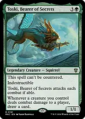Toski, Bearer of Secretsindestructible; a card whenever any of your creatures deals combat damage to a player. Finishers Craterhoof Behemothhaste, trample, +X/+X for each creature you control. Twenty Squirrels is the game. Chatterfang, Squirrel Generalsacrifice ten Squirrels to give one unblocked creature +10. Culling Ritualdestroys every nonland permanent with mana value 2 or less, YOUR tokens included, and adds a mana for each. With drain payoffs out, every token it kills drains the table, then you spend the mana. Tutor lines — what to fetch, and when →Beseech the Mirror → Warren Soultraderbargain a Treasure or token to cast the fetched card free if it costs 4 or less. Soultrader completes the drain loop. →Diabolic Intent → Warren Soultradersacrifice a Squirrel to tutor anything. →Green Sun's Zenith → Deep Forest HermitX = 5 for eight Squirrels. →Chord of Calling → Zulaport Cutthroatany creature, at instant speed, convoked by tapping Squirrels: the missing drain piece straight onto the battlefield on an opponent's end step. →Eldritch Evolution → Deep Forest Hermitsacrifice a three-drop for a creature of mana value five or less, onto the battlefield. The deck has no six-drop to sacrifice, so this cannot reach Craterhoof. →Finale of Devastation → Craterhoof BehemothX = 8 puts Hoof onto the battlefield; X of 10 or more pumps the team as well. →Nature's Rhythm → Warren Soultraderany creature onto the battlefield; harmonize casts it again from the graveyard. →Reanimate → Craterhoof Behemothif Hoof was discarded or milled, one black mana and eight life. Mana Llanowar Elvesthe usual. Elvish Mysticthe second copy. Elves of Deep Shadowblack mana, 1 damage each. Birds of Paradiseany colour. Delighted Halflingmana that makes Chatterfang uncounterable. Deathrite Shamanmana from lands in graveyards. Elvish Spirit Guidea free {G} from hand. Sol Ringthe usual. Arcane Signetthe usual. Lotus Petalfree. Dark Ritual{B}{B}{B} for {B}. Gaea's Cradle{G} for each creature you control. With a dozen Squirrels, a dozen mana. Swarmyardregenerates a Squirrel. Cavern of Soulsname Squirrel and your Squirrels can't be countered. 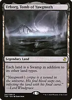Urborg, Tomb of Yawgmothevery land is a Swamp. Yavimaya, Cradle of Growthevery land on the battlefield is a Forest, opponents' included, so Chatterfang has forestwalk against everyone. Interaction Abrupt Decayan uncounterable answer to any nonland permanent with mana value 3 or less. Assassin's Trophydestroys any permanent; they get a basic land. Deadly Rollickfree while Chatterfang is out: exile a creature. Force of Vigorfree on their turn: two artifacts or enchantments. Boseiju, Who Enduresa land that destroys an artifact, enchantment or nonbasic land. Heroic Interventionhexproof and indestructible for your whole board. Veil of Summerprotection from blue and black for a turn. Eternal Witnessreturns any card from your graveyard. What to keep in an opening hand Keep Chatterfang mana, one token maker and either a sac outlet or a draw engine. Turn two Bitterblossom or Skullclamp, turn three Chatterfang, and the Squirrels pay for everything after. Count your drain before a big sacrifice turn: with Zulaport Cutthroat, Blood Artist and Mirkwood Bats out, twenty Squirrels is sixty damage across the table. Hold Heroic Intervention or a free Deadly Rollick when you overextend into an open-mana opponent.